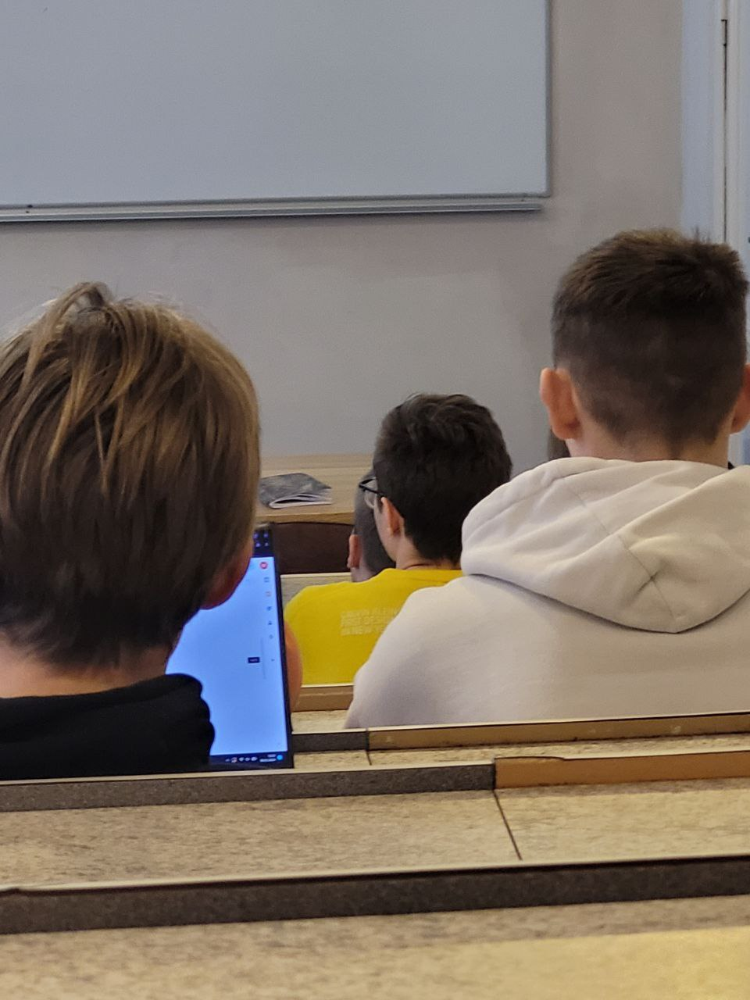

Pirmdiena
Nedēļas sākums un plānošana
Pirmdienas rīts parasti sākas ar nedēļas plāna pārskatīšanu. Pirms došanās uz universitāti students pārbauda lekciju sarakstu, e-studiju paziņojumus un uzdevumu termiņus. Tas palīdz saprast, kuras nodarbības notiek klātienē, kuras tiešsaistē un kurām nepieciešama iepriekšēja sagatavošanās. Pirmajā dienā īpaši svarīgi ir sakārtot prioritātes, jo darba nedēļā ātri sakrājas gan mazi tehniski uzdevumi, gan lielāki patstāvīgie darbi. Universitātē diena turpinās ar ievadlekciju, īsu pierakstu pārskatīšanu un sarunām ar kursabiedriem par nedēļas plāniem. Pirmdiena nosaka kopējo ritmu: ja tā sākas mierīgi un strukturēti, arī pārējās dienas kļūst vieglāk kontrolējamas.